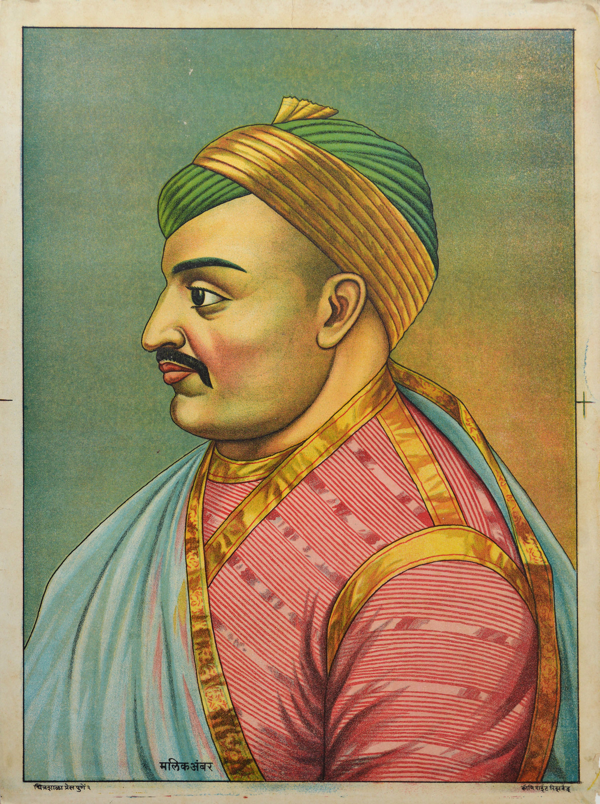
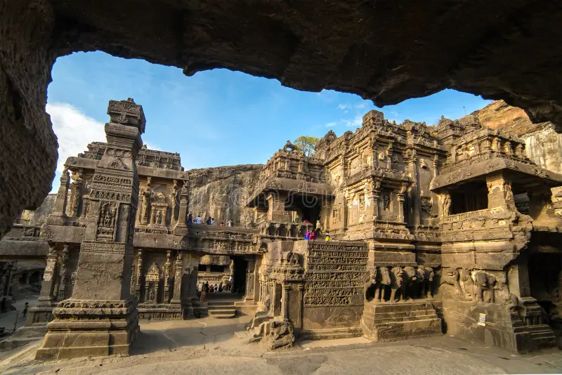

📜 History of Sambhajinagar
Exploring centuries of heritage, power and culture
📍 Introduction
Chhatrapati Sambhajinagar, formerly known as Aurangabad, is one of the most historically significant cities in the state of Maharashtra, India. Located in the central part of the state, the city has played a crucial role in shaping the cultural, political, and architectural history of the Deccan region. It is widely known for its rich heritage, ancient monuments, and unique blend of Mughal and Maratha influences.
The city was founded in 1610 by Malik Ambar, a prominent statesman of the Ahmadnagar Sultanate. Over time, it developed into a major administrative and military center. During the Mughal era, it gained immense importance when Emperor Aurangzeb made it his capital in the Deccan. This period saw the construction of several iconic monuments, including Bibi Ka Maqbara and Panchakki, which still stand as symbols of architectural brilliance.
Chhatrapati Sambhajinagar is also closely associated with the Maratha Empire and is named after Chhatrapati Sambhaji Maharaj, the son of Chhatrapati Shivaji Maharaj. The city reflects a deep connection to Maratha history and valor, making it culturally and historically significant.
Today, the city is not only known for its historical importance but also as a growing industrial, educational, and tourism hub. It is located near two UNESCO World Heritage Sites — Ajanta and Ellora caves — which attract visitors from all over the world. With its combination of ancient heritage and modern development, Chhatrapati Sambhajinagar stands as a perfect example of a city where history and progress coexist.
🏗 Foundation of the City
Chhatrapati Sambhajinagar was founded in 1610 by Malik Ambar, a brilliant administrator and military strategist of the Ahmadnagar Sultanate. Initially named Khadki, the city was carefully planned to serve as a strong administrative and military base in the Deccan region.
Malik Ambar is especially known for his advanced urban planning and water management systems. He introduced an efficient irrigation system known as the Naher-e-Ambari, which supplied water to the city through underground channels — a remarkable engineering achievement for that time.
Due to its strategic location and strong infrastructure, the city quickly gained importance and later became a major center during the Mughal period.

👑 Dynasties & Contributions
| Period ⏳ | Ruler 👑 | Contribution 🏗 |
|---|---|---|
| 1610 | Malik Ambar | Founded city and water system |
| 17th Century | Mughal Empire | Capital of Deccan & monuments |
| 18th Century | Maratha Empire | Regional cultural growth |
| Modern | India | Industrial & tourism hub |
🛕 Spiritual Significance
Chhatrapati Sambhajinagar is not only known for its history and culture but also for its deep spiritual importance. The region is home to several ancient temples and sacred sites that attract devotees from all over India.
It is widely believed that Lord Shiva (Mahadev) resided in the caves of Verul, also known as the Ellora Caves. These caves are not just architectural wonders but are also considered spiritually powerful places.

Ellora Caves (Verul Leni)

Grishneshwar Jyotirlinga Temple
According to ancient beliefs and local traditions, the region of Verul (Ellora) is closely associated with Lord Shiva (Mahadev) and Goddess Parvati. It is believed that Mahadev chose this sacred place as a site for meditation and divine presence, making it spiritually powerful for devotees.
The magnificent Kailasa Temple at Ellora, carved out of a single rock, is dedicated to Lord Shiva and is considered one of the greatest examples of ancient Indian architecture. It is said that the temple represents Mount Kailash, the heavenly abode of Mahadev and Parvati.
Devotees believe that the presence of Mahadev and Parvati in this region blesses the land with peace, strength, and spiritual energy. Many pilgrims visit not only to witness the architectural beauty but also to experience a deep sense of devotion and connection with the divine.
The nearby Grishneshwar Jyotirlinga further strengthens this belief, as it is one of the twelve sacred Jyotirlingas of Lord Shiva. According to mythology, worshipping here brings prosperity and spiritual growth.
The nearby Grishneshwar Temple, one of the twelve Jyotirlingas, holds great religious significance. Thousands of devotees visit this temple every year to seek blessings.